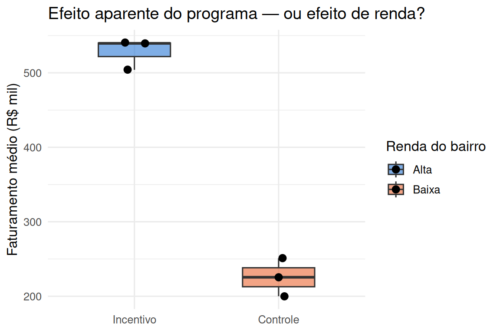
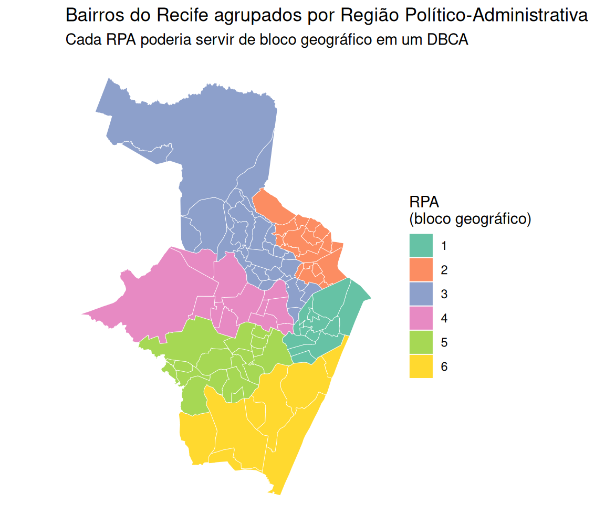
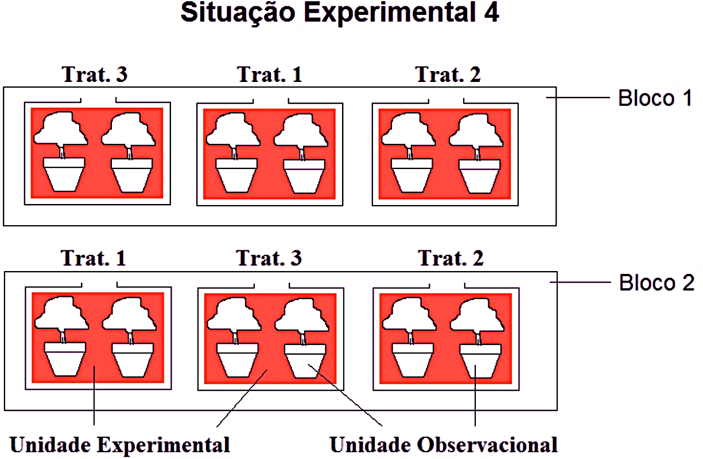
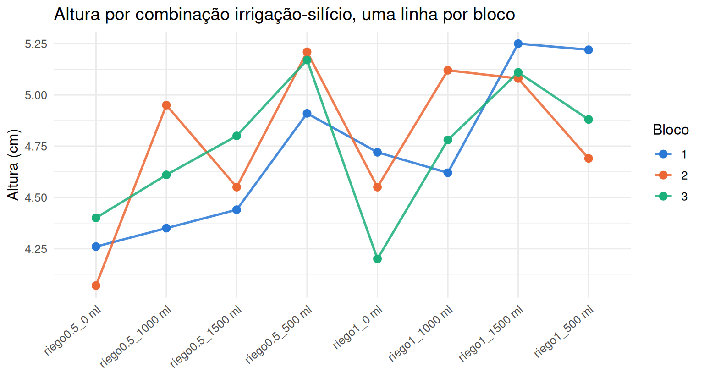
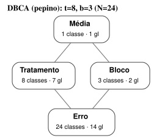
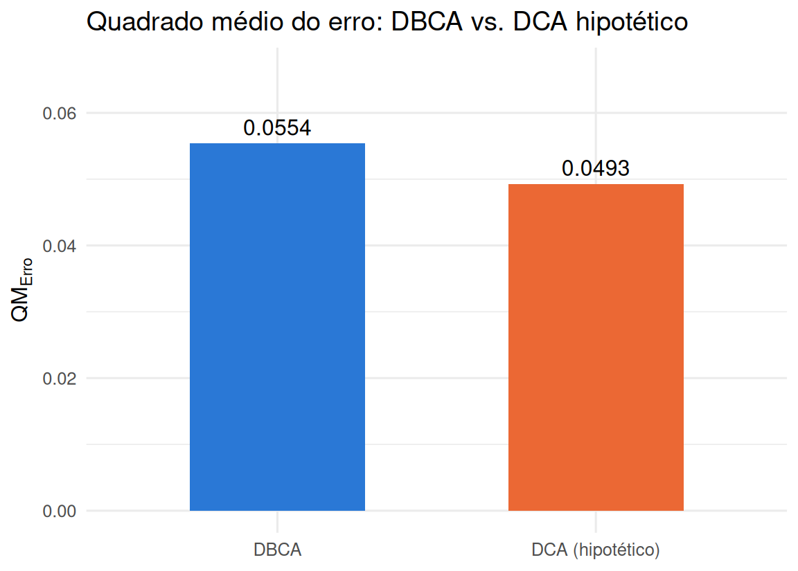

4.1 O delineamento em blocos completos aleatorizados (DBCA)
4.1.1 Motivação: o que dá errado sem controle local — fatores confundidos
Antes de descrever o DBCA formalmente, vale entender o que exatamente ele evita. Dois fatores \(A\) e \(B\) são ditos completamente confundidos quando, no delineamento usado, seus efeitos são matematicamente indistinguíveis — toda vez que \(A\) está em um certo nível, \(B\) também está, sem exceção, de modo que nenhuma comparação isola um do outro.
Uma prefeitura lança um programa de incentivo ao comércio local e, por conveniência logística, implementa-o apenas em bairros de renda alta, usando bairros de renda baixa como "controle" (sem o programa). Depois de um trimestre, compara o faturamento médio do comércio nos bairros com programa contra os sem programa.
set.seed(777)
dados_confundido <- tibble(
bairro = c("Boa Viagem", "Casa Forte", "Graças", "Ibura", "Coelhos", "Brasília Teimosa"),
renda = factor(rep(c("Alta", "Baixa"), each = 3), levels = c("Alta", "Baixa")),
programa = factor(rep(c("Incentivo", "Controle"), each = 3), levels = c("Incentivo", "Controle")),
# bairros de renda alta já faturam mais, com ou sem programa
faturamento = c(rnorm(3, 520, 40), rnorm(3, 210, 25))
)
dados_confundido## # A tibble: 6 × 4
## bairro renda programa faturamento
## <chr> <fct> <fct> <dbl>
## 1 Boa Viagem Alta Incentivo 540.
## 2 Casa Forte Alta Incentivo 504.
## 3 Graças Alta Incentivo 540.
## 4 Ibura Baixa Controle 200.
## 5 Coelhos Baixa Controle 251.
## 6 Brasília Teimosa Baixa Controle 226.ggplot(dados_confundido, aes(x = programa, y = faturamento, fill = renda)) +
geom_boxplot(alpha = 0.6, width = 0.5) +
geom_jitter(width = 0.08, size = 2.6) +
scale_fill_manual(values = c("#2a78d6", "#eb6834"), name = "Renda do bairro") +
labs(x = NULL, y = "Faturamento médio (R$ mil)",
title = "Efeito aparente do programa — ou efeito de renda?") +
theme_minimal(base_size = 12)
O grupo “Incentivo” fatura visivelmente mais — mas não há como saber se isso é efeito do
programa, da renda pré-existente do bairro, ou de ambos, porque renda e programa variam em
perfeita sincronia nesse delineamento: todo bairro de renda alta recebeu o programa, e nenhum de
renda baixa recebeu. Ajustar lm(faturamento ~ renda + programa) sequer é possível de forma
identificável aqui (as duas colunas de \(X\) seriam idênticas a menos de uma constante) — o R
reportaria um coeficiente NA para uma delas. Isso não é uma falha de estimação, é uma falha de
delineamento: nenhuma quantidade de dados adicionais no mesmo esquema resolveria o problema.
O DBCA é, em certo sentido, o oposto desse erro. Ele não trava um tratamento a um nível fixo de uma variável de ruído (o que criaria confusão); ao contrário, ele agrupa unidades por essa variável de ruído em blocos e depois sorteia os tratamentos dentro de cada bloco, de modo que todo tratamento seja observado em todo nível da variável de ruído. Um bairro poderia, por exemplo, funcionar como bloco geográfico legítimo — desde que a alocação do tratamento dentro dele seja aleatória, não determinada pela própria característica do bloco. O mapa abaixo, com os bairros do Recife (RPA — Região Político-Administrativa) coloridos por sua área de planejamento, ilustra a escala em que uma blocagem geográfica desse tipo é definida: cada RPA agruparia unidades vizinhas, presumivelmente mais parecidas entre si, dentro das quais os tratamentos seriam então sorteados.
recife <- st_read("../Aulas2026/assets/Bairros_Recife/bairros-polygon.shp", quiet = TRUE)
ggplot(recife) +
geom_sf(aes(fill = factor(rpa)), color = "white", linewidth = 0.15) +
scale_fill_brewer(palette = "Set2", name = "RPA\n(bloco geográfico)") +
labs(title = "Bairros do Recife agrupados por Região Político-Administrativa",
subtitle = "Cada RPA poderia servir de bloco geográfico em um DBCA") +
theme_minimal(base_size = 11) +
theme(axis.text = element_blank(), panel.grid = element_blank())
Com 94 bairros distribuídos em seis RPAs, um pesquisador que quisesse comparar, por exemplo, três estratégias de precificação no comércio local poderia blocar por RPA (controlando diferenças regionais de renda e densidade comercial) e, dentro de cada RPA, sortear os bairros participantes entre as três estratégias — o mesmo princípio do exemplo agrícola que segue, só que com blocos definidos por geografia urbana em vez de área de viveiro.
4.1.2 O modelo
Sejam \(t\) tratamentos e \(b\) blocos. No DBCA, cada bloco contém exatamente uma unidade experimental por tratamento — os blocos são “completos” porque nenhum tratamento fica de fora de nenhum bloco — e a ordem de aplicação dos tratamentos dentro de cada bloco é sorteada independentemente em cada bloco. O modelo estatístico é
\[ Y_{ij} = \mu + \tau_i + \beta_j + \varepsilon_{ij}, \qquad i = 1,\dots,t;\ j = 1,\dots,b, \]
em que \(\mu\) é a média geral, \(\tau_i\) é o efeito (fixo) do \(i\)-ésimo tratamento, \(\beta_j\) é o efeito do \(j\)-ésimo bloco (em geral tratado como aleatório, \(\beta_j \sim N(0,\sigma^2_\beta)\), independente dos erros, embora a análise de efeitos fixos produza os mesmos testes-\(F\) sobre os tratamentos) e \(\varepsilon_{ij} \sim N(0,\sigma^2)\), independentes. Usamos as restrições \(\sum_i \tau_i = 0\) e \(\sum_j \beta_j = 0\) para identificabilidade. Note a ausência de um termo de interação tratamento\(\times\)bloco: o modelo assume que o efeito de um tratamento é o mesmo, a menos de erro aleatório, em todos os blocos (aditividade tratamento-bloco) — retomaremos essa suposição ao final da seção.

Figura 4.1: Situação Experimental 4: a mesma lógica de unidade experimental (UE) e unidade amostral da Seção 3.5, agora cruzada com blocos. Dentro de cada Bloco, os três tratamentos são sorteados independentemente entre as UEs daquele bloco; cada UE contém, por sua vez, duas unidades amostrais (vasos) medidas individualmente.
O diagrama retoma as Situações Experimentais 1 e 2 da Seção 3.3, acrescentando agora a estrutura de blocagem: cada retângulo maior (“Bloco 1”, “Bloco 2”) é um bloco completo, e o sorteio dos três tratamentos ocorre dentro de cada bloco, de forma independente — Bloco 1 sorteia a ordem Trat. 3, Trat. 1, Trat. 2, enquanto Bloco 2 sorteia Trat. 1, Trat. 3, Trat. 2, uma permutação diferente, exatamente como a Seção 4.1 descreve a aleatorização restrita: cada UE dentro de um bloco tem a mesma chance de receber cada tratamento, mas o sorteio não se estende entre blocos. Note também que cada UE aqui contém duas unidades amostrais (dois vasos), o que significa que este desenho combina blocagem e submuestreo simultaneamente — um lembrete de que as duas ideias (Seção 3.3 e esta seção) não são mutuamente exclusivas: é perfeitamente possível ter um DBCA com submuestreo dentro de cada UE, embora o modelo \(Y_{ij} = \mu + \tau_i + \beta_j + \varepsilon_{ij}\) apresentado acima descreva o caso mais simples, sem submuestreo (uma única observação por combinação tratamento-bloco).
4.1.3 Notação matricial: \(Y=X\beta+\varepsilon\)
O modelo do DBCA é um caso particular do modelo linear geral que formalizaremos no Capítulo 2, \(Y = X\beta + \varepsilon\), e vale a pena escrevê-lo assim desde já, porque a estrutura de \(X\) deixa visualmente óbvio um fato que, em palavras, é fácil de esquecer: não há colunas de produto entre tratamento e bloco. Empilhando as \(tb\) observações em um vetor \(Y\), a matriz de delineamento tem a forma em blocos de colunas
\[ X = \big[\,\mathbf{1} \mid X_{trat} \mid X_{bloco}\,\big], \]
em que \(\mathbf 1\) é a coluna de uns (intercepto), \(X_{trat}\) tem \(t-1\) colunas indicadoras dos tratamentos e \(X_{bloco}\) tem \(b-1\) colunas indicadoras dos blocos (uma coluna é omitida em cada grupo para evitar colinearidade com o intercepto, na parametrização usual de “tratamento de referência”). O vetor de parâmetros é \(\beta=(\mu,\tau_2,\dots,\tau_t,\beta_2,\dots,\beta_b)'\). Repare que não existe nenhuma coluna do tipo (indicador de tratamento) \(\times\) (indicador de bloco): é exatamente essa ausência — não uma suposição adicional escondida em algum lugar — que constitui, em termos de \(X\), a suposição de aditividade tratamento-bloco. Um quadrado latino (Seção 4.4) terá a mesma estrutura, só que com três blocos de colunas lado a lado (tratamento, linha, coluna) em vez de dois — e nenhuma delas cruzada com as outras.
dados_toy <- expand_grid(bloco = factor(1:2), tratamento = factor(1:3))
model.matrix(~ tratamento + bloco, data = dados_toy)## (Intercept) tratamento2 tratamento3 bloco2
## 1 1 0 0 0
## 2 1 1 0 0
## 3 1 0 1 0
## 4 1 0 0 1
## 5 1 1 0 1
## 6 1 0 1 1
## attr(,"assign")
## [1] 0 1 1 2
## attr(,"contrasts")
## attr(,"contrasts")$tratamento
## [1] "contr.treatment"
##
## attr(,"contrasts")$bloco
## [1] "contr.treatment"O estimador de mínimos quadrados \(\hat\beta=(X'X)^{-1}X'Y\) e a matriz de projeção \(H=X(X'X)^{-1}X'\) (Capítulo 2) aplicam-se sem modificação — a ANOVA que segue nada mais é do que uma forma de organizar \(\|Y-\hat Y\|^2=\|(I-H)Y\|^2\) e suas partes atribuíveis a cada bloco de colunas de \(X\).
4.1.4 Blocagem como aleatorização restrita: a camada causal
Vale a pena revisitar a blocagem sob a ótica causal potencial-outcomes de Neyman e Rubin (Imbens & Rubin, 2015; Rubin, 1974; Splawa-Neyman, 1990), já que ela explica por que o DBCA continua produzindo um estimador não viesado do efeito do tratamento, e não apenas como calculá-lo. Para cada unidade \(u\) e tratamento \(i\), existe um resultado potencial \(Y_u(i)\) — a resposta que \(u\) teria sob o tratamento \(i\), quer esse tratamento tenha sido de fato aplicado a \(u\) ou não. O efeito causal médio do tratamento \(i\) contra o tratamento \(i'\) é \(\mathbb E[Y_u(i)-Y_u(i')]\), tomado sobre a população de unidades.
Em um DCA (sem blocos), o sorteio é completo: cada unidade tem a mesma probabilidade de receber cada tratamento, e essa aleatorização garante \(\mathbb E[Y_u(i)\mid \text{recebeu }i] = \mathbb E[Y_u(i)]\) — o grupo que de fato recebeu \(i\) é, em expectativa, uma amostra representativa de como toda a população responderia a \(i\). No DBCA, o sorteio é restrito (ou estratificado): dentro de cada bloco \(j\), sorteiam-se os \(t\) tratamentos entre as unidades daquele bloco. Isso ainda é aleatorização — cada unidade dentro do bloco tem a mesma chance de receber cada tratamento —, só que aplicada separadamente em cada estrato. A analogia com amostragem estratificada é direta: assim como estimar uma média populacional estratificando por uma variável correlacionada com a resposta produz um estimador igualmente não viesado, mas com variância menor que a amostragem aleatória simples, blocar por uma variável correlacionada com a resposta produz um estimador do efeito de tratamento igualmente não viesado, mas com erro-padrão menor — precisamente o ganho que a eficiência relativa, adiante, quantifica. A condição para que a blocagem não piore nada é fraca (basta que o sorteio dentro de cada bloco seja de fato aleatório); a condição para que ela ajude é que os blocos correlacionem com a resposta — se não correlacionarem, o único custo é gastar \(b-1\) graus de liberdade do erro à toa, como veremos no exemplo do viveiro de pepineiros.
4.1.5 Tabela de ANOVA
A soma de quadrados total se decompõe em três partes:
\[ \underbrace{\sum_{i,j}(Y_{ij}-\bar Y_{..})^2}_{SQ_{Total}} = \underbrace{b\sum_i(\bar Y_{i.}-\bar Y_{..})^2}_{SQ_{Trat}} + \underbrace{t\sum_j(\bar Y_{.j}-\bar Y_{..})^2}_{SQ_{Bloco}} + \underbrace{SQ_{Total}-SQ_{Trat}-SQ_{Bloco}}_{SQ_{Erro}}. \]
| Fonte de variação | Graus de liberdade | Soma de quadrados | Quadrado médio |
|---|---|---|---|
| Tratamento | \(t-1\) | \(SQ_{Trat}\) | \(QM_{Trat}=SQ_{Trat}/(t-1)\) |
| Bloco | \(b-1\) | \(SQ_{Bloco}\) | \(QM_{Bloco}=SQ_{Bloco}/(b-1)\) |
| Erro | \((t-1)(b-1)\) | \(SQ_{Erro}\) | \(QM_{Erro}=SQ_{Erro}/[(t-1)(b-1)]\) |
| Total | \(tb-1\) | \(SQ_{Total}\) |
O teste de interesse compara \(F_0 = QM_{Trat}/QM_{Erro}\) com \(F_{\alpha,\,t-1,\,(t-1)(b-1)}\). Um teste sobre os blocos (\(QM_{Bloco}/QM_{Erro}\)) também é produzido pelo software, mas não deve guiar decisões de retirar a blocagem do modelo: os blocos foram fixados pelo delineamento (não sorteados), então o objetivo de incluí-los é reduzir o erro experimental, não testar sua significância — mesmo um bloco “não significativo” já removeu variação do erro que, de outra forma, inflaria \(QM_{Erro}\) e reduziria o poder do teste sobre os tratamentos.
4.1.6 Esperança dos quadrados médios
A afirmação anterior — que o teste \(F\) sobre blocos não deve orientar decisão alguma — não é só uma convenção prática; ela é uma consequência direta de quem entra na esperança de cada quadrado médio. Sob o modelo de efeitos fixos \(\sum_i\tau_i=0\), \(\sum_j\beta_j=0\),
\[ \mathbb E[QM_{Trat}] = \sigma^2 + \frac{b}{t-1}\sum_{i=1}^t \tau_i^2, \qquad \mathbb E[QM_{Bloco}] = \sigma^2 + \frac{t}{b-1}\sum_{j=1}^b \beta_j^2, \qquad \mathbb E[QM_{Erro}] = \sigma^2. \]
O denominador correto de um teste \(F\) é sempre um quadrado médio cuja esperança é \(\sigma^2\) sob a hipótese nula de interesse — e \(QM_{Erro}\) cumpre esse papel tanto para o teste de tratamentos quanto, formalmente, para um teste de blocos. O problema não é a matemática do teste \(QM_{Bloco}/QM_{Erro}\) (ele é perfeitamente calculável e o software o reporta sem erro); é que \(H_0:\beta_1=\dots=\beta_b=0\) não corresponde a pergunta científica alguma neste delineamento — os blocos não foram sorteados de uma população de blocos possíveis, foram escolhidos porque já se sabia, a priori, que representavam uma fonte real de heterogeneidade (áreas do viveiro com solos e insolação diferentes). Testar se algo que já sabíamos ser heterogêneo é “estatisticamente heterogêneo” é uma pergunta mal colocada; a pergunta que importa — “quanto essa heterogeneidade conhecida contaminaria o erro se eu a ignorasse?” — é justamente o que a eficiência relativa, adiante, responde.
Um experimento de horticultura investiga o efeito conjunto de dois níveis de irrigação (0,5 e 1,0, uma fração da lâmina de referência) e quatro doses de silício (0, 500, 1000 e 1500 ml) sobre a altura de plantas de pepino. As oito combinações de irrigação e silício foram aplicadas em três blocos (áreas contíguas do viveiro, cada uma com sua própria heterogeneidade de solo e insolação), com uma planta de cada combinação por bloco.
Para introduzir o DBCA de um único fator, tratamos cada uma das \(2\times 4=8\) combinações de irrigação e silício como um “tratamento” só, deixando a decomposição desse efeito em irrigação, silício e sua interação para o Capítulo 5 (fatoriais em blocos), quando retomaremos exatamente este conjunto de dados.
pepino <- read_csv("data/pepino.csv", show_col_types = FALSE) %>%
mutate(
tratamento = factor(paste0("riego", riego, "_", silicio)),
bloco = factor(bloque)
)
glimpse(pepino)## Rows: 24
## Columns: 6
## $ riego <dbl> 0.5, 0.5, 0.5, 0.5, 1.0, 1.0, 1.0, 1.0, 0.5, 0.5, 0.5, 0.5,…
## $ silicio <chr> "0 ml", "500 ml", "1000 ml", "1500 ml", "0 ml", "500 ml", "…
## $ bloque <dbl> 1, 1, 1, 1, 1, 1, 1, 1, 2, 2, 2, 2, 2, 2, 2, 2, 3, 3, 3, 3,…
## $ altura <dbl> 4.26, 4.91, 4.35, 4.44, 4.72, 5.22, 4.62, 5.25, 4.07, 5.21,…
## $ tratamento <fct> riego0.5_0 ml, riego0.5_500 ml, riego0.5_1000 ml, riego0.5_…
## $ bloco <fct> 1, 1, 1, 1, 1, 1, 1, 1, 2, 2, 2, 2, 2, 2, 2, 2, 3, 3, 3, 3,…A coluna bloco não é uma variável de interesse científico — ninguém pergunta “o bloco 2 produz
plantas mais altas que o bloco 1?” — ela apenas identifica qual área contígua do viveiro
originou cada planta, uma fonte conhecida de heterogeneidade de solo e insolação que queremos
neutralizar antes de comparar irrigação e silício. É por isso, e não por acaso de notação, que a
Seção anterior insistiu em não usar o teste \(F\) de blocos para decidir se vale a pena mantê-los no
modelo: a pergunta “o bloco é estatisticamente significativo?” não é a pergunta que nos interessa
sobre essa coluna.
mod_dbca <- aov(altura ~ tratamento + bloco, data = pepino)
anova(mod_dbca) %>%
broom::tidy() %>%
kable(digits = 4, caption = "ANOVA do DBCA — altura de pepineiros") %>%
kable_styling(full_width = FALSE)| term | df | sumsq | meansq | statistic | p.value |
|---|---|---|---|---|---|
| tratamento | 7 | 2.0359 | 0.2908 | 5.2478 | 0.0041 |
| bloco | 2 | 0.0128 | 0.0064 | 0.1157 | 0.8916 |
| Residuals | 14 | 0.7759 | 0.0554 | NA | NA |
Há evidência forte de efeito de tratamento (\(F_{7,14}=5{,}25\), \(p=0{,}0041\)): pelo menos uma combinação de irrigação/silício produz altura média diferente das demais. O efeito de bloco é pequeno neste conjunto de dados (\(p=0{,}89\)) — voltaremos a esse ponto na discussão sobre eficiência relativa, adiante.
4.1.7 Visualizando aditividade: o gráfico de perfis
A suposição de aditividade tratamento-bloco (Seção anterior) tem um diagnóstico visual direto: plotar a resposta por tratamento, com uma linha ligando as observações de cada bloco. Se o efeito de bloco fosse puramente aditivo — um simples deslocamento vertical, igual para todos os tratamentos —, as três linhas seriam aproximadamente paralelas.
pal_blocos <- c("#2a78d6", "#eb6834", "#1baf7a") # paleta categórica validada (3 blocos)
ggplot(pepino, aes(x = tratamento, y = altura, group = bloco, color = bloco)) +
geom_line(linewidth = 0.9, alpha = 0.85) +
geom_point(size = 2.6) +
scale_color_manual(values = pal_blocos, name = "Bloco") +
labs(x = NULL, y = "Altura (cm)",
title = "Altura por combinação irrigação-silício, uma linha por bloco") +
theme_minimal(base_size = 12) +
theme(axis.text.x = element_text(angle = 40, hjust = 1))
As três linhas não são exatamente paralelas: cruzam-se em vários pontos (por exemplo, em torno de
riego1_0 ml, o bloco 3 cai abaixo dos blocos 1 e 2, invertendo a ordem que tinham no tratamento
anterior). A pergunta é se esse cruzamento é sinal de não aditividade ou apenas ruído — e o
gráfico sozinho não responde.
Com uma única observação por casela tratamento\(\times\)bloco, a interação completa, de \((t-1)(b-1)\) graus de liberdade, de fato não é separável do erro: ela ocupa exatamente o mesmo espaço. Mas daí não se segue que a aditividade seja intestável. O que não se pode testar é a interação irrestrita; uma forma restrita dela, sim.
4.1.8 O teste de não aditividade de Tukey
A ideia de Tukey (1949b) é abrir mão de estimar \((t-1)(b-1)\) parâmetros de interação e postular que a não aditividade, se existir, tem a forma multiplicativa de um único parâmetro:
\[ (\tau\beta)_{ij} \;=\; \eta\,\tau_i\,\beta_j , \]
isto é, o desvio da aditividade na casela \((i,j)\) é proporcional ao produto dos dois efeitos principais. Sob essa restrição sobra um grau de liberdade a estimar — \(\eta\) —, e um grau de liberdade cabe folgadamente nos \((t-1)(b-1)\) do erro. A soma de quadrados de não aditividade é
\[ SQ_N=\frac{\Big[\sum_{i}\sum_{j} y_{ij}\,(\bar y_{i\cdot}-\bar y_{\cdot\cdot})\, (\bar y_{\cdot j}-\bar y_{\cdot\cdot})\Big]^2} {\sum_i(\bar y_{i\cdot}-\bar y_{\cdot\cdot})^2\;\sum_j(\bar y_{\cdot j}-\bar y_{\cdot\cdot})^2}, \qquad 1 \text{ gl}, \]
e, sob a hipótese de aditividade estrita,
\[ F_0=\frac{SQ_N}{\big(SQ_{Erro}-SQ_N\big)\big/\big[(t-1)(b-1)-1\big]} \;\sim\; F_{1,\;(t-1)(b-1)-1}. \]
Em palavras: parte-se o termo de erro do DBCA em duas linhas — não aditividade (1 gl) e resto — e pergunta-se se a primeira é grande demais para ser ruído.
mu_g <- mean(pepino$altura)
ef_t <- tapply(pepino$altura, pepino$tratamento, mean) - mu_g # efeitos de tratamento
ef_b <- tapply(pepino$altura, pepino$bloco, mean) - mu_g # efeitos de bloco
num <- sum(pepino$altura *
ef_t[as.character(pepino$tratamento)] *
ef_b[as.character(pepino$bloco)])
SQ_N <- num^2 / (sum(ef_t^2) * sum(ef_b^2))
tab <- summary(mod_dbca)[[1]]
SQ_E <- tab["Residuals", "Sum Sq"]
gl_E <- tab["Residuals", "Df"]
F_0 <- SQ_N / ((SQ_E - SQ_N) / (gl_E - 1))
tibble(Fonte = c("Não aditividade", "Resto", "Erro do DBCA (total)"),
gl = c(1, gl_E - 1, gl_E),
SQ = c(SQ_N, SQ_E - SQ_N, SQ_E)) %>%
mutate(QM = SQ / gl,
F = c(F_0, NA, NA),
`valor-p` = c(pf(F_0, 1, gl_E - 1, lower.tail = FALSE), NA, NA)) %>%
kable(digits = 4, caption = "Partição do erro do DBCA pelo teste de Tukey") %>%
kable_styling(full_width = FALSE)| Fonte | gl | SQ | QM | F | valor-p |
|---|---|---|---|---|---|
| Não aditividade | 1 | 0.0018 | 0.0018 | 0.0306 | 0.8639 |
| Resto | 13 | 0.7741 | 0.0595 | NA | NA |
| Erro do DBCA (total) | 14 | 0.7759 | 0.0554 | NA | NA |
O resultado é inequívoco: \(F_{1,13}\) próximo de zero, com valor-\(p\) muito alto. Não há evidência alguma de não aditividade — o cruzamento das linhas no gráfico de perfis é ruído, exatamente o que se esperaria de um experimento em que o bloco explica pouquíssima variação (o próprio teste \(F\) de blocos, na tabela de ANOVA acima, não chega perto da significância). O gráfico levantou a suspeita; o teste a descartou. É essa a divisão de trabalho entre diagnóstico visual e teste formal, e é por isso que o primeiro nunca dispensa o segundo.
Duas ressalvas sobre o alcance do teste. A primeira: ele só tem poder contra a forma multiplicativa de não aditividade; uma interação de outro feitio pode passar despercebida. A segunda, que é a face positiva da mesma moeda: quando \(\eta\) é significativo, a forma multiplicativa costuma indicar que uma transformação da resposta (tipicamente na família potência — Seção 3.5 do Capítulo 3) restauraria a aditividade, o que torna o teste também um diagnóstico construtivo, e não apenas um veredito.
## [1] 24 10## (Intercept) tratamentoriego0.5_1000 ml tratamentoriego0.5_1500 ml
## 1 1 0 0
## 2 1 0 0
## 3 1 1 0
## 4 1 0 1
## tratamentoriego1_500 ml bloco2
## 1 0 0
## 2 0 0
## 3 0 0
## 4 0 04.1.9 Diagrama de Hasse do DBCA: por que não há nó de interação
A ausência de colunas de produto em \(X\), confirmada acima, e a ausência de graus de liberdade sobráveis para testar tratamento\(\times\)bloco (parágrafo anterior) são a mesma afirmação vista de dois ângulos diferentes — e o diagrama de Hasse do Capítulo 2 (Seção 2.2) é o terceiro ângulo, geométrico, que amarra os outros dois. No fatorial \(A\times B\) cruzado do Capítulo 2 (Figura 2.2), \(A\) e \(B\) aparecem no mesmo nível e se reencontram em um nó de interação \(A{\times}B\), que absorve \((a-1)(b-1)\) graus de liberdade antes de chegar ao erro. O DBCA tem a mesma estrutura de topo — Tratamento e Bloco cruzados, no mesmo nível — mas sem esse nó intermediário:
nos_dbca <- tibble(
termo = c("Média", "Tratamento", "Bloco", "Erro"),
classes = c(1, 8, 3, 24) # t=8 tratamentos; b=3 blocos; N=24 parcelas
)
arestas_dbca <- tibble(
de = c("Média", "Média", "Tratamento", "Bloco"),
para = c("Tratamento", "Bloco", "Erro", "Erro")
)
knitr::include_graphics(
hasse_svg(nos_dbca, arestas_dbca,
arquivo = "figuras/hasse/dbca.svg",
titulo = "DBCA (pepino): t=8, b=3 (N=24)")
)
Figura 4.2: Diagrama de Hasse do DBCA, exemplo pepino: t=8 combinações irrigação-silício (tratamento), b=3 blocos, N=24. Tratamento e Bloco aparecem no mesmo nível (cruzados), mas – ao contrário do fatorial A x B do Capítulo 2 (seção sobre diagramas de Hasse) – não há nó de interação entre eles: com uma única observação por casela tratamento x bloco, os dois convergem direto no Erro.
Os quatro nós somam \(1+7+2+14=24=tb=N\): nada sobra para um quinto nó de interação. A razão algébrica é a mesma que gera esse fato geométrico — cada casela tratamento\(\times\)bloco do DBCA contém exatamente uma unidade experimental, então o próprio Erro é a variação residual dentro de cada casela, o mesmo lugar onde um eventual efeito de interação teria de morar. Não é que a interação tratamento\(\times\)bloco seja assumida igual a zero por conveniência; é que o delineamento, ao não replicar dentro de casela, não deixa nenhum grau de liberdade disponível para separar os dois — a formalização de \(\mathbb E[QM_{Erro}]=\sigma^2\) da Seção anterior já assume essa ausência, e o diagrama simplesmente torna visível, como contagem de nós e arestas, o motivo pelo qual \(\mathbb E[QM_{Erro}]\) não tem outro termo a mais somado a \(\sigma^2\): não há onde ele seria estimado. O que a seção sobre o teste de Tukey mostrou é que essa impossibilidade vale para a interação irrestrita: ao postular a forma multiplicativa \(\eta\,\tau_i\beta_j\), reduz-se a interação a um único parâmetro, e esse grau de liberdade pode ser tomado emprestado do erro. O diagrama continua explicando por que \(\mathbb E[QM_{Erro}]=\sigma^2\) não tem termo adicional; o teste de Tukey apenas mostra que uma fatia de 1 gl desse erro pode ser interrogada.
4.1.10 Dados faltantes: estimação do valor perdido
Perder uma observação é comum em campo (planta morre, parcela é destruída por um evento externo). O DBCA deixa de ser balanceado, e o cálculo manual das somas de quadrados deixa de ser trivial. A solução clássica de Yates (Yates, 1936) é estimar o valor perdido de modo a minimizar a soma de quadrados do erro, e então prosseguir com a ANOVA usual, com duas ressalvas: (i) reduz-se em 1 o grau de liberdade do erro (a observação estimada não traz informação nova), e (ii) a soma de quadrados de tratamentos calculada com o valor estimado fica levemente viesada para cima e pode ser corrigida.
Para uma única observação perdida na célula (tratamento \(i^\*\), bloco \(j^\*\)), o valor que minimiza \(SQ_{Erro}\) é
\[ \hat y_{i^*j^*} = \frac{t\,T'_{i^*} + b\,B'_{j^*} - G'}{(t-1)(b-1)}, \]
em que \(T'_{i^*}\) é o total do tratamento \(i^\*\) (excluindo a observação perdida), \(B'_{j^*}\) é o total do bloco \(j^\*\) (idem) e \(G'\) é o total geral (idem). A correção aproximada para a soma de quadrados de tratamentos é
\[ SQ_{Trat}^{\,ajustada} = SQ_{Trat}^{\,ingênua} - \frac{\left[B'_{j^*} - (t-1)\hat y_{i^*j^*}\right]^2}{t(t-1)}. \]
# Removemos, propositalmente, a altura observada para riego = 1, silicio = "1000 ml", bloco 2
alvo <- which(pepino$riego == 1 & pepino$silicio == "1000 ml" & pepino$bloque == 2)
valor_real <- pepino$altura[alvo]
pepino_miss <- pepino
pepino_miss$altura[alvo] <- NA
t <- nlevels(pepino$tratamento); b <- nlevels(pepino$bloco)
trat_alvo <- pepino$tratamento[alvo]
bloco_alvo <- pepino$bloco[alvo]
Tlinha <- sum(pepino_miss$altura[pepino_miss$tratamento == trat_alvo], na.rm = TRUE)
Blinha <- sum(pepino_miss$altura[pepino_miss$bloco == bloco_alvo], na.rm = TRUE)
Glinha <- sum(pepino_miss$altura, na.rm = TRUE)
y_hat <- (t * Tlinha + b * Blinha - Glinha) / ((t - 1) * (b - 1))
c(valor_real = valor_real, estimado = y_hat, erro = y_hat - valor_real)## valor_real estimado erro
## 5.1200000 4.6914286 -0.4285714pepino_imputado <- pepino_miss
pepino_imputado$altura[alvo] <- y_hat
mod_imputado <- aov(altura ~ tratamento + bloco, data = pepino_imputado)
tab_imp <- anova(mod_imputado)
correcao <- (Blinha - (t - 1) * y_hat)^2 / (t * (t - 1))
SS_trat_ajustado <- tab_imp["tratamento", "Sum Sq"] - correcao
c(SQ_trat_ingenua = tab_imp["tratamento", "Sum Sq"],
correcao = correcao, SQ_trat_ajustada = SS_trat_ajustado)## SQ_trat_ingenua correcao SQ_trat_ajustada
## 2.010202381 0.001207143 2.008995238Neste exemplo, o valor real era \(5{,}12\) cm e a fórmula de Yates estimou \(4{,}69\) cm — um erro de \(0{,}43\) cm, razoável frente ao desvio-padrão residual do modelo completo. A correção da soma de quadrados de tratamentos foi minúscula (\(0{,}0012\)), porque a discrepância entre bloco e tratamento neste conjunto de dados já era pequena. Em conjuntos de dados com blocos muito diferentes entre si, a correção pode ser relevante, e ignorá-la infla ligeiramente a estatística \(F\) de tratamentos. Com mais de um valor perdido, o mesmo princípio se generaliza por iteração: estima-se cada valor faltante pela fórmula acima usando os demais valores (observados e já estimados), repetindo o processo até os valores estimados convergirem — na prática, hoje, resolve-se de forma exata por mínimos quadrados com dados desbalanceados (Capítulo 2), e a fórmula de Yates permanece valiosa por seu valor didático e por dispensar software especializado.
4.1.11 Eficiência relativa do DBCA frente ao DCA
Ter reduzido o erro experimental valeu a pena? A eficiência relativa (ER) do DBCA em relação a um DCA hipotético (que teria usado as mesmas \(tb\) unidades, mas ignorado os blocos) responde essa pergunta comparando as variâncias por unidade experimental que os dois desenhos produziriam. A quantidade tem duas partes. A primeira é a razão entre a variância por unidade que um DCA teria e a que o DBCA obteve. Como não se rodou o DCA, sua variância é estimada a partir da própria ANOVA do DBCA, agrupando de volta o que a blocagem separou:
\[ \hat\sigma^2_{DCA}=\frac{(b-1)\,QM_{Bloco}+\big[(t-1)+(t-1)(b-1)\big]\,QM_{Erro}}{tb-1}. \]
A segunda parte é um fator de correção de graus de liberdade: \(\hat\sigma^2_{DCA}\) e \(QM_{Erro}\) são estimativas com números diferentes de graus de liberdade, e comparar variâncias estimadas com poucos graus de liberdade favorece artificialmente a que tem mais. Com \(\nu_b=(t-1)(b-1)\) (erro do DBCA) e \(\nu_c=t(b-1)\) (erro que o DCA teria),
\[ \widehat{ER}(DBCA, DCA)=\underbrace{\frac{(\nu_b+1)(\nu_c+3)}{(\nu_b+3)(\nu_c+1)}}_{\text{correção de gl}} \;\cdot\;\frac{\hat\sigma^2_{DCA}}{QM_{Erro}} . \]
\(ER>1\) indica que o DBCA foi mais eficiente: seria preciso aumentar as repetições do DCA por um fator \(ER\) para igualar a precisão do DBCA. Note que o fator de correção é sempre menor que 1 quando \(\nu_b<\nu_c\) — ele penaliza o DBCA, que é o desenho com menos graus de liberdade de erro, e nunca o promove. Há ainda um critério exato, devido a Lentner, Arnold e Hinkelmann, que dispensa a fórmula: \(ER>1\) se e somente se \(H=QM_{Bloco}/QM_{Erro}>1\).
tab <- anova(mod_dbca)
MSB <- tab["bloco", "Mean Sq"]; MSE <- tab["Residuals", "Mean Sq"]
gl_b <- tab["bloco", "Df"]; gl_e_dbca <- tab["Residuals", "Df"]
gl_e_dca <- gl_e_dbca + gl_b
t_niv <- nlevels(pepino$tratamento); b_niv <- nlevels(pepino$bloco)
sigma2_dca <- ((b_niv - 1) * MSB +
((t_niv - 1) + (t_niv - 1) * (b_niv - 1)) * MSE) / (t_niv * b_niv - 1)
correcao <- ((gl_e_dbca + 1) * (gl_e_dca + 3)) / ((gl_e_dbca + 3) * (gl_e_dca + 1))
ER <- correcao * sigma2_dca / MSE
c(sigma2_DCA = sigma2_dca, correcao_gl = correcao, ER = ER,
H = MSB / MSE) # criterio exato: ER > 1 se e so se H > 1## sigma2_DCA correcao_gl ER H
## 0.05116033 0.98615917 0.91032808 0.11570310$ER , isto é, menor que 1: neste experimento a blocagem por área do viveiro não só deixou de ajudar como piorou a precisão. O critério exato confirma, sem depender da fórmula: \(H=QM_{Bloco}/QM_{Erro}\approx0{,}12\ll1\).
O diagnóstico é coerente com tudo o mais que já vimos sobre estes dados: o quadrado médio de blocos é bem menor que o do erro, e o teste \(F\) de blocos não chega perto da significância. Os blocos não capturaram heterogeneidade nenhuma — as unidades do viveiro já eram homogêneas quanto ao que importa para a altura das plantas — e o DBCA gastou \(b-1=2\) graus de liberdade do erro sem retorno.
Isso não significa que blocar tenha sido um erro de julgamento. A decisão de blocar é tomada antes de coletar os dados, sob incerteza sobre a heterogeneidade do material experimental, e o custo de blocar à toa (perder alguns graus de liberdade) é tipicamente muito menor que o custo de não blocar quando havia heterogeneidade real (inflar o erro e perder poder para sempre). O que o cálculo de eficiência oferece é uma avaliação a posteriori, útil para planejar o próximo experimento no mesmo viveiro: se a homogeneidade se confirmar em novas rodadas, um DCA com as mesmas \(tb\) unidades entregaria mais graus de liberdade de erro e, portanto, mais poder.
QME_dbca <- MSE
QME_dca <- (tab["Residuals","Sum Sq"] + tab["bloco","Sum Sq"]) / gl_e_dca # erro + bloco, agrupados
df_re <- tibble(
Delineamento = factor(c("DBCA", "DCA (hipotético)"), levels = c("DBCA", "DCA (hipotético)")),
QM_Erro = c(QME_dbca, QME_dca)
)
ggplot(df_re, aes(x = Delineamento, y = QM_Erro, fill = Delineamento)) +
geom_col(width = 0.55) +
geom_text(aes(label = sprintf("%.4f", QM_Erro)), vjust = -0.5, size = 4.2) +
scale_fill_manual(values = c("#2a78d6", "#eb6834"), guide = "none") +
labs(x = NULL, y = expression(QM[Erro]),
title = "Quadrado médio do erro: DBCA vs. DCA hipotético") +
ylim(0, max(df_re$QM_Erro) * 1.2) +
theme_minimal(base_size = 12)
O gráfico conta a mesma história que o cálculo de eficiência: o \(QM_{Erro}\) do DCA hipotético (\(0{,}0493\)) é menor que o do DBCA (\(0{,}0554\)). Isso acontece porque agrupar \(SQ_{Bloco}\) (muito pequena) de volta ao erro, dividida por mais graus de liberdade (\(16\) em vez de \(14\)), baixa a média. Os dois diagnósticos — a razão de quadrados médios e o \(ER\) corrigido — apontam na mesma direção aqui, e é bom que apontem: quando \(QM_{Bloco}<QM_{Erro}\), blocar não ajudou.
Vale, ainda assim, entender o que a correção de graus de liberdade faz, porque ela é a parte não óbvia da fórmula. Uma estimativa de variância com mais graus de liberdade é, por si só, mais confiável — produz intervalos e testes mais precisos — do que uma com menos. Como é o DCA hipotético que teria mais graus de liberdade de erro (\(16\) contra \(14\)), a correção \(\frac{(\nu_b+1)(\nu_c+3)}{(\nu_b+3)(\nu_c+1)}=0.9862\) penaliza o DBCA, e não o contrário. Ela nunca converte um desenho pior num melhor: com \(\nu_b<\nu_c\) o fator é sempre menor que 1. É por isso que o critério exato de Lentner, Arnold e Hinkelmann pode ser enunciado de forma tão simples — \(ER>1 \iff QM_{Bloco}>QM_{Erro}\) —, e é uma boa verificação de sanidade para qualquer conta de eficiência relativa: se o quadrado médio de blocos é menor que o do erro, nenhuma fórmula de \(ER\) pode concluir que a blocagem ajudou.
- Se, neste experimento, o quadrado médio de blocos tivesse sido bem maior que o quadrado médio do erro, o que isso indicaria sobre a decisão original de blocar por área do viveiro?
- O modelo do DBCA não inclui interação tratamento$\times$bloco. O que essa suposição de aditividade significa em termos práticos — por exemplo, é razoável supor que a diferença entre duas doses de silício seja a mesma nos três blocos deste experimento?
- Por que não se deve decidir remover o termo de bloco do modelo com base no teste $F$ de blocos não ser significativo?